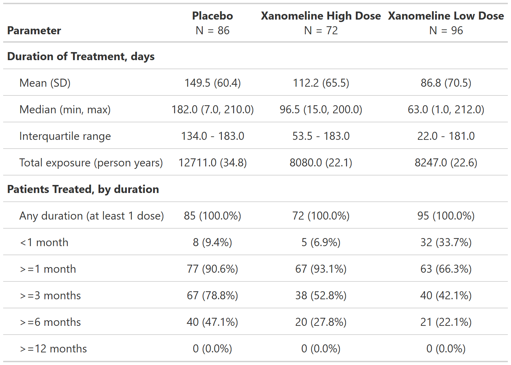

FDA Table 05
Duration of Treatment Exposure, Safety Population, Pooled Analyses
table
FDA
safety
exposure
Code
# Load libraries & data -------------------------------------
library(dplyr)
library(cards)
library(gtsummary)
adsl <- pharmaverseadam::adsl
# Pre-processing --------------------------------------------
data <- adsl %>%
# Filter for the safety population
filter(SAFFL == "Y") %>%
# Calculate treatment duration values
mutate(TRTDUR = lubridate::interval(.data[["TRTSDTM"]], .data[["TRTEDTM"]])) %>%
mutate(
# Get treatment duration values in months (for analysis of patients treated)
TRTDUR_MONTHS = TRTDUR %>% as.numeric("months"),
# Specify unit to use for duration of treatment (for analysis of treatment duration)
TRTDUR = TRTDUR %>% as.numeric("days")
) %>%
# Add one flag variable for each treatment duration range
mutate(
D_ANY = TRTDUR_MONTHS > 0, # any duration (at least 1 dose)
D_LT1 = TRTDUR_MONTHS < 1, # duration <1 month
D_GT1 = TRTDUR_MONTHS >= 1, # duration >=1 month
D_GT3 = TRTDUR_MONTHS >= 3, # duration >=3 months
D_GT6 = TRTDUR_MONTHS >= 6, # duration >=6 months
D_GT12 = TRTDUR_MONTHS >= 12 # duration >=12 months
)Code
# Stack ARD results of two analyses
ard <- data |>
ard_stack(
.by = TRT01A,
# Analysis of treatment duration ----------------------
ard_continuous(
variables = TRTDUR,
statistic = everything() ~ continuous_summary_fns(
# Specify which default statistics to include
summaries = c("mean", "sd", "median", "min", "max", "p25", "p75"),
# Specify custom statistics to include
other_stats = list(
# Add total exposure statistic
tot_exposure = \(x) sum(x),
# Add total person years statistic (using same unit specified in pre-processing)
person_yrs = \(x) as.numeric(lubridate::duration(sum(x), "days"), "years")
)
)
),
# Analysis of patients treated ------------------------
ard_dichotomous(
variables = c(D_ANY, D_LT1, D_GT1, D_GT3, D_GT6, D_GT12),
# Calculate the n and % statistics for each flag variable
statistic = everything() ~ c("n", "p")
)
)
ard{cards} data frame: 72 x 11 group1 group1_level variable variable_level context stat_name stat_label stat fmt_fun warning error
1 TRT01A Placebo TRTDUR continuo… mean Mean 149.541 1
2 TRT01A Placebo TRTDUR continuo… sd SD 60.354 1
3 TRT01A Placebo TRTDUR continuo… median Median 182 1
4 TRT01A Placebo TRTDUR continuo… min Min 7 1
5 TRT01A Placebo TRTDUR continuo… max Max 210 1
6 TRT01A Placebo TRTDUR continuo… p25 Q1 134 1
7 TRT01A Placebo TRTDUR continuo… p75 Q3 183 1
8 TRT01A Placebo TRTDUR continuo… tot_exposure tot_expo… 12711 1
9 TRT01A Placebo TRTDUR continuo… person_yrs person_y… 34.801 1
10 TRT01A Placebo D_ANY TRUE dichotom… n n 85 0
11 TRT01A Placebo D_ANY TRUE dichotom… p % 1 <fn>
12 TRT01A Placebo D_LT1 TRUE dichotom… n n 8 0
13 TRT01A Placebo D_LT1 TRUE dichotom… p % 0.094 <fn>
14 TRT01A Placebo D_GT1 TRUE dichotom… n n 77 0
15 TRT01A Placebo D_GT1 TRUE dichotom… p % 0.906 <fn>
16 TRT01A Placebo D_GT3 TRUE dichotom… n n 67 0
17 TRT01A Placebo D_GT3 TRUE dichotom… p % 0.788 <fn>
18 TRT01A Placebo D_GT6 TRUE dichotom… n n 40 0
19 TRT01A Placebo D_GT6 TRUE dichotom… p % 0.471 <fn>
20 TRT01A Placebo D_GT12 TRUE dichotom… n n 0 0
21 TRT01A Placebo D_GT12 TRUE dichotom… p % 0 <fn>
22 TRT01A Xanomeli… TRTDUR continuo… mean Mean 112.222 1
23 TRT01A Xanomeli… TRTDUR continuo… sd SD 65.523 1
24 TRT01A Xanomeli… TRTDUR continuo… median Median 96.5 1
25 TRT01A Xanomeli… TRTDUR continuo… min Min 15 1
26 TRT01A Xanomeli… TRTDUR continuo… max Max 200 1
27 TRT01A Xanomeli… TRTDUR continuo… p25 Q1 53.5 1
28 TRT01A Xanomeli… TRTDUR continuo… p75 Q3 183 1
29 TRT01A Xanomeli… TRTDUR continuo… tot_exposure tot_expo… 8079.999 1
30 TRT01A Xanomeli… TRTDUR continuo… person_yrs person_y… 22.122 1
31 TRT01A Xanomeli… D_ANY TRUE dichotom… n n 72 0
32 TRT01A Xanomeli… D_ANY TRUE dichotom… p % 1 <fn>
33 TRT01A Xanomeli… D_LT1 TRUE dichotom… n n 5 0
34 TRT01A Xanomeli… D_LT1 TRUE dichotom… p % 0.069 <fn>
35 TRT01A Xanomeli… D_GT1 TRUE dichotom… n n 67 0
36 TRT01A Xanomeli… D_GT1 TRUE dichotom… p % 0.931 <fn>
37 TRT01A Xanomeli… D_GT3 TRUE dichotom… n n 38 0
38 TRT01A Xanomeli… D_GT3 TRUE dichotom… p % 0.528 <fn>
39 TRT01A Xanomeli… D_GT6 TRUE dichotom… n n 20 0
40 TRT01A Xanomeli… D_GT6 TRUE dichotom… p % 0.278 <fn> ℹ 32 more rowsℹ Use `print(n = ...)` to see more rowsCode
# Use info from the ARD previously generated to create a table
tbl <- tbl_ard_summary(
ard,
by = TRT01A,
# Use type "continuous2" to display statistics on separate lines
type = list(TRTDUR = "continuous2"),
# Specify summary statistics to display for treatment duration variable
statistic = all_continuous() ~ c(
"{mean} ({sd})", "{median} ({min}, {max})",
iqr = "{p25} - {p75}", "{tot_exposure} ({person_yrs})"
),
# Add descriptive labels for each variable
label =
list(
TRTDUR = "Duration of Treatment, days",
D_ANY = "Any duration (at least 1 dose)",
D_LT1 = "<1 month",
D_GT1 = ">=1 month",
D_GT3 = ">=3 months",
D_GT6 = ">=6 months",
D_GT12 = ">=12 months"
)
) |>
# Add custom statistic labels for treatment duration variable, keep other stat labels as is
add_stat_label(
label = list(
TRTDUR ~ c("Mean (SD)", "Median (min, max)", "Interquartile range", "Total exposure (person years)"),
all_dichotomous() ~ NA_character_
)
) |>
# Add label over analysis of group of flag variables
add_variable_group_header("Patients Treated, by duration", all_dichotomous()) |>
# Update header labels
modify_header(
label ~ "**Parameter**",
all_stat_cols() ~ "**{level}** \nN = {n}"
) |>
# bold text in the two label rows
modify_bold(
rows = (variable == "TRTDUR" & row_type == "label") | (row_type == "variable_group"),
columns = label
)
tbl